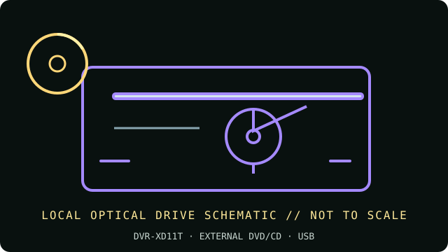

[ INDIVIDUAL COMPONENT // OPTICAL DRIVES ]
Pioneer DVR-XD11T Portable DVD/CD Writer
Slim portable USB DVD/CD writer in Pioneer’s XD11 series. Preserve the full DVR-XD11T marking: similar XD11 and XD09 model names are not interchangeable evidence for firmware or included software.

IDENTIFICATION: Pioneer DVR-XD11T · Match the complete label, service code and manual revision before relying on a feature or installing firmware.
Verified specifications
| Catalog subcategory | External DVD writers |
|---|---|
| Exact product identifier | Pioneer DVR-XD11T |
| Supported DVD/CD formats | Reads DVD-ROM, DVD±R/RW, DVD±R DL, DVD-RAM and CD-ROM/R/RW. Writes DVD±R, DVD±RW, DVD±R DL, DVD-RAM and CD-R/RW. |
| DVD read/write speeds | DVD±R write up to 8×; DVD±R DL up to 6×; DVD+RW up to 8×; DVD-RW up to 6×; DVD-RAM up to 5×; DVD read up to 8×. |
| CD read/write speeds | CD-ROM read up to 24×; CD-R/RW write up to 24×. |
| USB interface and power | External USB 2.0 connection, bus-powered through the supplied cable arrangement. Use a direct host connection and the specified auxiliary/second USB power lead if the host port cannot sustain operation. |
| Compatibility, software and caveats | This is an older drive: Pioneer’s manual targets its contemporary Windows/Mac environment, not every current OS version. A recent system may enumerate a standard USB optical drive, but playback, region handling and burning depend on current third-party software and media. |
Use and preservation notes
- Close the tray and keep the drive level during operation; do not disconnect or remove a disc during an active write.
- Use known-good media and a conservative supported speed for archival copies. Finalize as appropriate and read back the disc; retain a checksum and log drive model, firmware, software, media ID and errors.
- Store optical media in protective cases away from heat, direct light, humidity, scratches and adhesive labels. Keep more than one verified copy.
Manufacturer and manual sources
- Pioneer — archived DVR-XD11T product informationPioneer archive entry for the exact portable DVD writer model.
- Pioneer — official manual download portalManufacturer manual search portal; use DVR-XD11T to match the original revision.
Advertised maxima are media-dependent drive ratings, not guarantees of a successful burn or recovery from damaged/aged media. Exact host and software support can change by region and operating-system release.